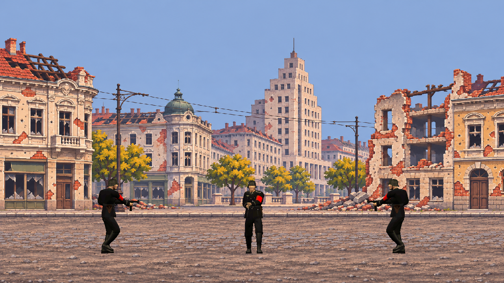
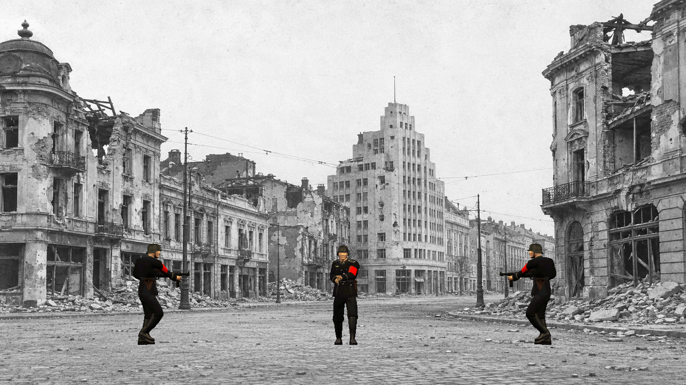

Dve nove varijante istog ambijenta: pixel art u stilu ostalih bojišta i crno-bela slika po uzoru na postojeću pozadinu. Likovi su isti kao u igri, u istoj veličini i položaju; isključi ih da vidiš čistu pozadinu.
Otvori pixel art PNGOtvori crno-beli PNGPromptovi i izvoriPodaci pripreme


Obe nove slike su generisane ilustracije istorijskog ambijenta, a ne arhivske fotografije. U statici nema ljudi, zastava, plamena ili dima; prikazani likovi su odvojen sloj pregleda. Crno-bela verzija je izabrana i povezana sa Otpisanima: probaj u igri. Pixel art i prethodna Varšava ostaju za poređenje.
Istorijski oslonci: Muzej Jugoslavije — Beograd posle oslobođenja 1944. · Istorijski arhiv Beograda.